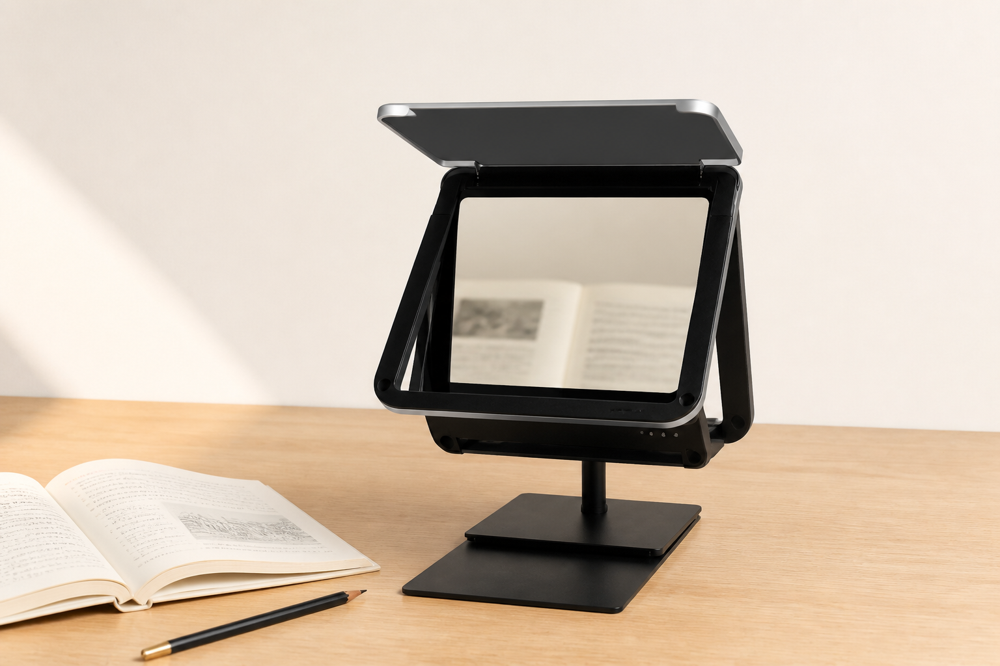

写作业时，纸笔没有变，只是眼睛不再一直盯着近处。
DISTANCE × SPECTRUM = EYESCARE
为长时间读写而生的
家庭空间光学读写台
不是另一盏台灯。它把近处的书和屏幕，送到数米之外去看。桌面仍是熟悉的纸笔，读写距离从这里重新开始。

[AI 产品场景图：基于官网产品外观生成，正式物料上线前替换]FOR THE FAMILY DESK
0m 以内的远像距离，
让近处的内容去到远处。
0+Ra 高显色
0nits 入眼亮度
演示数据，上线前替换。远像距离手动约 2–10m，电动约 2.5–10m；不构成医疗建议。
THIRD-PARTY OPTICAL TEST
全光谱，是给眼睛的诚实光线
3500K、4000K、5000K 三档色温，跟着一天的节奏走。蓝光危害按 RG0 档表述，把复杂测试翻译成家里听得懂的话。
[替换：爱视可光谱测试与书写场景]
近处的书
远处的书
SPATIAL OPTICS
孩子看见的是远处的书。
桌面还是熟悉的纸笔。拖动距离，感受从近桌面到远像阅读的变化。
2m10m
OPEN / CLOSE
打开，是读写台。
收起，还是一张安静书桌。
前盖与平面镜随使用展开。合上以后，不打扰家的秩序。
纸笔
比较型号
Pro
EyesCare Pro
小程序 + 手动远像，屏幕可选
¥5,980演示策略价，非正式零售价◉远像距离手动约 2–10m
☀全光谱照明3500K / 4000K / 5000K
RG0蓝光危害RG0 档表述
▣控制2.79 寸 · 小程序
—摄像头无摄像头
▱远像屏13.3 寸屏可选
⌁隐私无需采集原始画面
Max
EyesCare Max
AI + 手动远像，屏幕可选
¥6,980演示策略价，非正式零售价◉远像距离手动约 2–10m
☀全光谱照明高显色 · 开盖自动亮灯
RG0蓝光危害RG0 档表述
▣控制3.1 寸触控 · 语音 · 小程序
◌人在感应人来工作，人走关闭
▱远像屏13.3 寸 2560×1600 可选
⌁隐私原始画面不存不传
Ultra
EyesCare Ultra
AI + 电动远像，屏幕标配
¥11,980演示策略价，非正式零售价◉远像距离电动约 2.5–10m
☀全光谱照明高显色 · 开盖自动亮灯
RG0蓝光危害RG0 档表述
▣控制3.1 寸触控 · 语音 · 小程序
◌人在感应人来工作，人走关闭
▱远像屏13.3 寸 2560×1600 标配
⌁隐私原始画面不存不传
13.3"远像屏[替换：远像屏产品实拍]
产品
空间光学读写台。
科技
远像、全光谱与隐私。
理念
让读写回到该有的距离。
小程序
FUTURUS 爱视可入口占位。